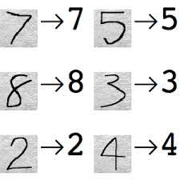
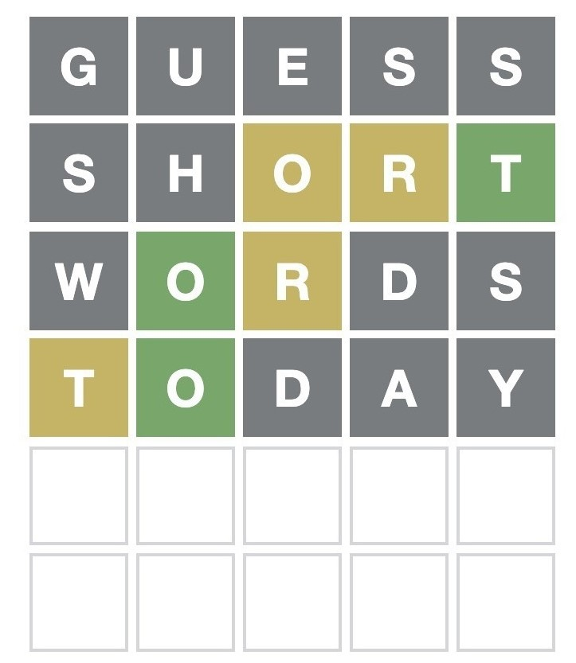
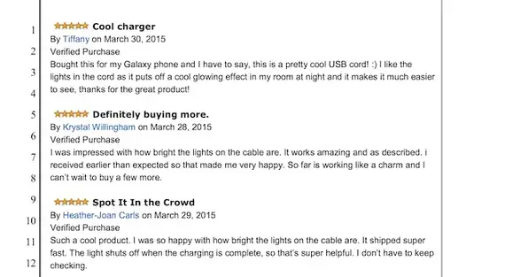

|

|
Evolving a Handwritten digits classifier using Genetic Algorithms
Pranav Gupta
Next Tech Lab, SRM University, 2023
Used Genetic Algorithms to mutate number of filters and filter size of a deep convolution neural network.
Trained evolving CNNs to classify Handwritten Digits and showed proof of concept.
Accuracy rose from 92% to 96%.
|

|
AI Wordle Solver
Pranav Gupta
Next Tech Lab , SRM University, 2022
Created a Character Recogntion model and a 3-color classifier model that takes in a partially-filled Wordle to generate the next best word to play
Used Greedy algorithms to find the next best word to play.
|

|
Amazon Product Reviewer
Pranav Gupta
Next Tech Lab, SRM University, 2022
Conceptualized a new normalized and comparable product reviewer metric that considers ratings, helpfulness, verification, and time intervals between all reviews to show which product has been selling more
Implemented threading to increase process of scraping almost 5000 reviews off one product into CSV files in AWS S3.
Incorporated a sorted table based on metric calculated for each product.
|
|
Text-to-Music MusicLM Implementation (Ongoing)
Pranav Gupta
Next Tech Lab, SRM University, 2023
Re-implementing Google's MusicLM Paper.
Used MusicCaps dataset to train a MuLan model, then finetuned the AudioLM model on text-music pairs.
|
|
SearchBrowserHistoryGPT
Pranav Gupta
Next Tech Lab, SRM University, 2023
Finetuned the text-davinci-003 GPT model on my browser search history.
Scraped static content off all websites that has been searched on my chrome browser.
Created a chatbot that will provide you with the link of the url based on your given query about the website.
|
{kind=link}